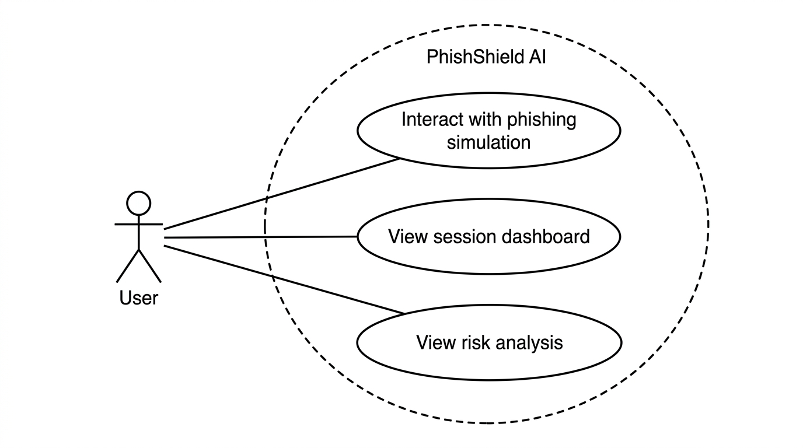
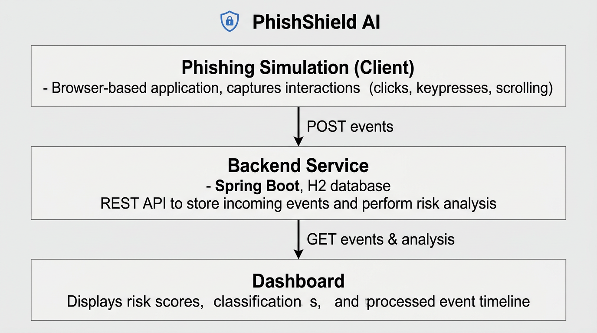
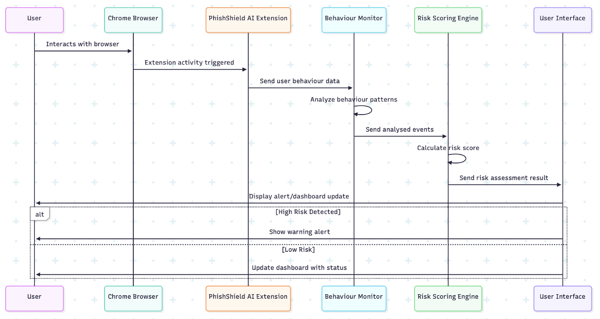
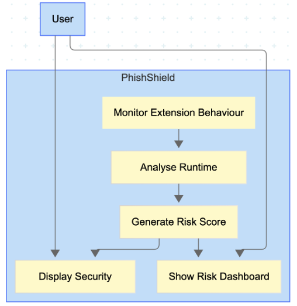
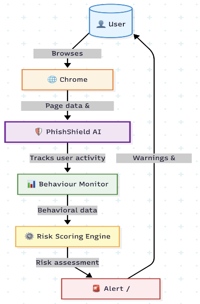
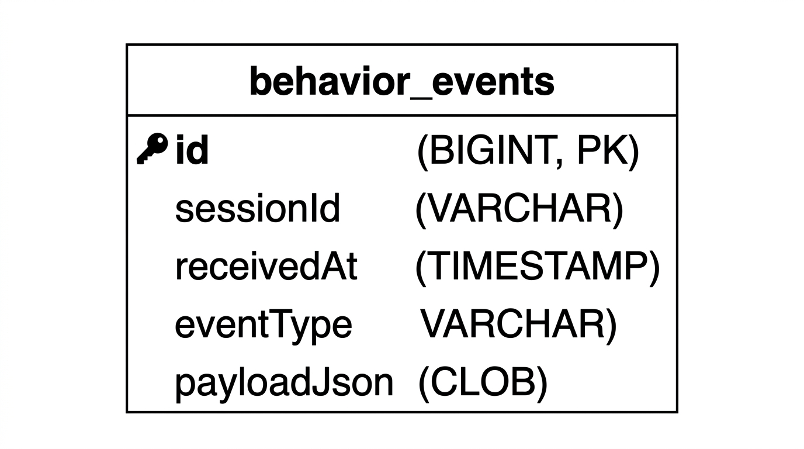

PhishShield AI system design diagrams for the dissertation.
Primary actor (user) and use cases: interact with phishing simulation, view session dashboard, view risk analysis.

Client (phishing simulation), backend (Spring Boot, H2), and dashboard with data flow.

User → Chrome → PhishShield Extension → Behaviour Monitor → Risk Scoring Engine → UI (high/low risk outcomes).

Monitor → Analyse → Generate risk score → Display security / Show risk dashboard.

User browsing → Page data → PhishShield → Behaviour Monitor → Risk Scoring Engine → Alert (with feedback to user).

Entity structure for behaviour_events: sessionId, eventType, receivedAt, payloadJson.
